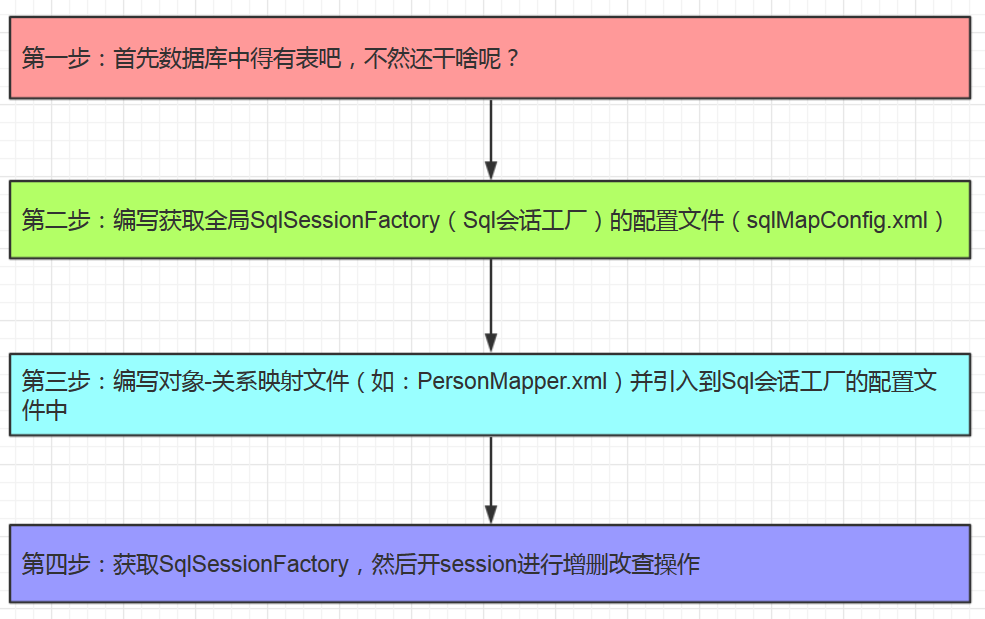

示意图

样例
前提准备：先建一个maven工程，并引入mybatis的核心依赖包和mysql的驱动包，如下所示：

第一步：首先数据库中得有表吧，不然还干啥呢？

第二步：编写获取全局SqlSessionFactory（Sql会话工厂）的配置文件（sqlMapConfig.xml）
<?xml version="1.0" encoding="UTF-8" ?>
<!DOCTYPE configuration
PUBLIC "-//mybatis.org//DTD Config 3.0//EN"
"http://mybatis.org/dtd/mybatis-3-config.dtd">
<configuration>
<environments default="development">
<environment id="development">
<transactionManager type="JDBC" />
<dataSource type="POOLED">
<property name="driver" value="com.mysql.jdbc.Driver" />
<property name="url" value="jdbc:mysql://172.18.5.25:3306/mybatis?characterEncoding=utf-8" />
<property name="username" value="root" />
<property name="password" value="382346819pl" />
</dataSource>
</environment>
</environments>
<mappers>
<mapper resource="com/pl/models/PetMapper.xml" />
</mappers>
</configuration>
第三步：编写对象-关系映射文件（如：PersonMapper.xml）并引入到Sql会话工厂的配置文件中
第四步：获取SqlSessionFactory，然后开session进行增删改查操作